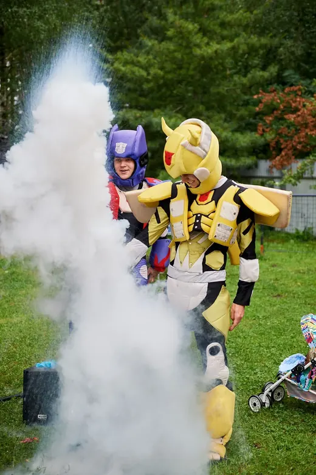
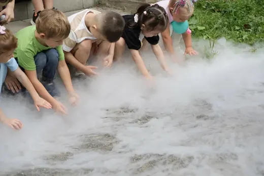
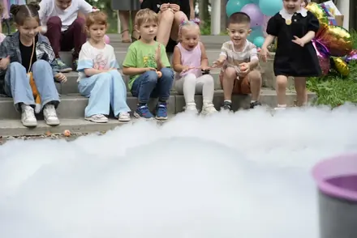
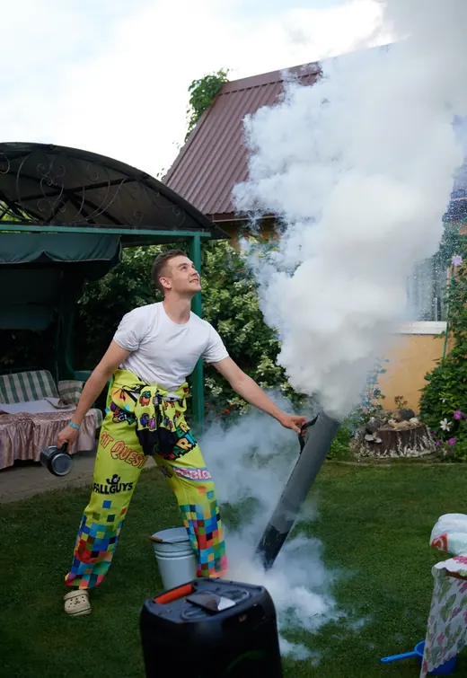
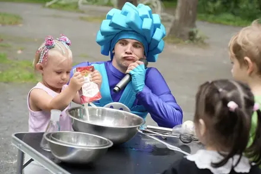
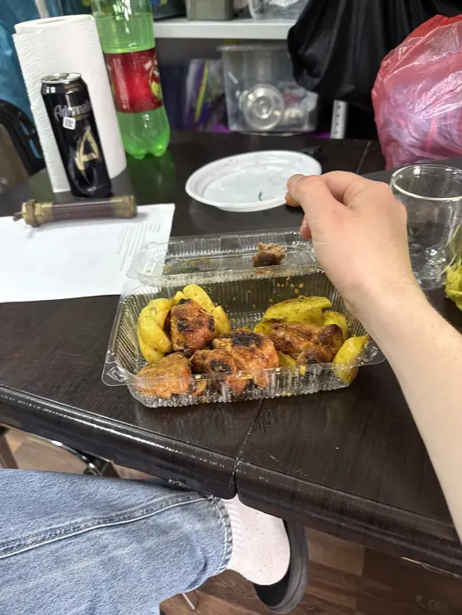

Ведущий выходит к столу с бутылями жидкого азота: −196 °C, облако стелется по земле, из бутыли поднимается вулкан. Вторая половина шоу съедобная — на этом же столе делают мороженое и раздают его детям в рожках.
Сколько нужно места и куда поставить стол — Андрей смотрит по вашей площадке при бронировании.








Ролики на сайте сняты на одном дне рождения во дворе частного дома: анимационная программа, крио-шоу и пенная вечеринка подряд, без постановки.
Азот не горит и не ядовит: воздух на три четверти состоит из него. Опасен только контакт с жидкой фазой, поэтому бутыль и посуда остаются в руках ведущего, а детям достаётся уже готовое угощение.
Да, в прайсе студии это описано так: молекулярная кухня со съедобными угощениями. Азот к моменту раздачи испаряется. Если у кого-то из детей аллергия или ограничения по еде — скажите Андрею заранее.
Можно, если комнату есть чем проветрить. Чаще его берут во двор или на площадку: там дым красивее ложится и его видно всем гостям.
Напишите, какой праздник и когда — Андрей ответит и скажет, свободно ли время. Отвечает в день обращения.